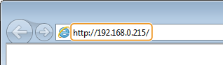
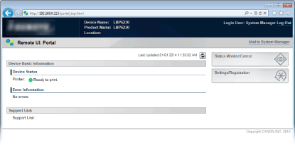
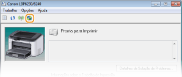

0KU8-036
Para operar a impressora remotamente, inicie o Remote UI digitando o endereço IP da impressora em seu navegador da web. Antes de começar, verifique o endereço IP que foi designado à impressora (Visualizando as definições de rede). Se não souber o endereço IP da impressora, pergunte ao seu administrador de rede ou inicie o Remote UI a partir da Janela de Status da Impressora (Inicializando a partir da Janela de Status da Impressora).
1
Inicie o navegador da web.
2
Digite "http://<o endereço IP da impressora>/" no campo de endereço e pressione a tecla [ENTER].

Se estiver usando um endereço IPv6, coloque o endereço IPv6 entre colchetes (exemplo: "http://[fe80::2e9e:fcff:fe4e:dbce]/").

Se um nome de host da impressora está registrado com um servidor de DNS
Em vez do <endereço IP da impressora>, você pode digitar o <"nome do host"."nome do domínio"> (exemplo: "http://my_printer.example.com").
Se um alerta de segurança é exibido
Um alerta de segurança pode ser exibido quando a comunicação com o Remote UI estiver codificada (Ativando a comunicação criptografada SSL para o Remote UI). Se não houver problemas com as configurações de certificado ou configurações de SSL, continue navegado até o site do Remote UI.
3
Selecione [System Manager Mode] ou [End-User Mode].

 [System Manager Mode]
[System Manager Mode]Você pode fazer todas as operações do Remote UI e fazer todas as configurações. Se um PIN (senha do administrador do sistema) foi definido, digite-o em [System Manager PIN]. (Definindo senhas de administrador de sistema) Se um PIN não foi definido (configuração padrão de fábrica), você não precisa inserir nada.
 [End-User Mode]
[End-User Mode]Você pode verificar o status dos documentos na impressora e também pode verificar as configurações.
4
Clique em [Log In].
 |
A Página do Portal (página principal) do Remote UI aparece. Telas do Remote UI
 |

Se não souber o endereço IP da impressora, você pode iniciar o Remote UI a partir da Janela de Status da Impressora.
1
Selecione a impressora clicando  na bandeja do sistema.
na bandeja do sistema.
na bandeja do sistema.
2
Clique em  .
.
.
|
|
Seu navegador da web é inicializado, e a página de login do Remote UI é exibida.
Se um alerta de segurança é exibido
Um alerta de segurança pode ser exibido quando a comunicação com o Remote UI estiver codificada (Ativando a comunicação criptografada SSL para o Remote UI). Se não houver problemas com as configurações de certificado ou configurações de SSL, continue navegado até o site do Remote UI.
|
3
Selecione [System Manager Mode] ou [End-User Mode].
[System Manager Mode]Você pode fazer todas as operações do Remote UI e fazer todas as configurações. Se um PIN (senha do administrador do sistema) foi definido, digite-o em [System Manager PIN]. (Definindo senhas de administrador de sistema) Se um PIN não foi definido (configuração padrão de fábrica), você não precisa inserir nada.
[End-User Mode]Você pode verificar os documentos impressos, verificar o status da impressora e ver as configurações da impressora.
4
Clique em [Log In].
|
|
A Página do Portal (página principal) do Remote UI aparece. Telas do Remote UI
|